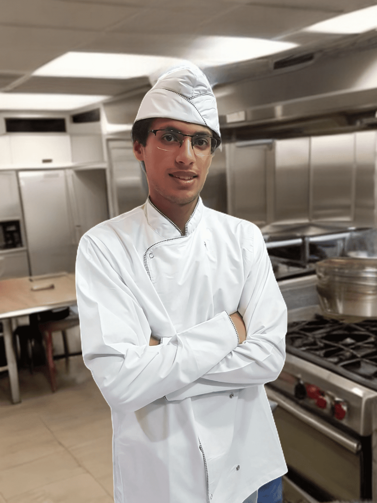

Meet the best Koch Chef auf der ganzen Welt
Amine WissErfahrener Kochpraktikant mit fundierten Kenntnissen in Kochtechniken und Lebensmittelhygiene, mehrsprachig und lernbereit, auf der Suche nach neuen beruflichen Herausforderungen
Ich bin Mohamed Amine, ein engagierter und wissbegieriger Kochpraktikant mit umfassender Erfahrung in der Gastronomie. Durch meine Praktika in verschiedenen Restaurants und Snackbars habe ich wertvolle Kenntnisse in Kochtechniken, Lebensmittelsicherheit und Hygienevorschriften erworben. Meine Fähigkeiten umfassen aktives Zuhören, Teamfähigkeit, Zuverlässigkeit und selbstständiges Arbeiten. Ich spreche fließend Deutsch, Englisch, Französisch, Amazigh und Arabisch, was mir ermöglicht, in multikulturellen Teams effektiv zu kommunizieren. Mit einem Baccalaureat in Physikwissenschaften und einem Deutsch B1 Zertifikat, bin ich immer bestrebt, meine Fähigkeiten weiterzuentwickeln und neue Lernmöglichkeiten zu nutzen. Meine Leidenschaft für das Kochen, gepaart mit meiner Bereitschaft, ständig zu lernen und mich zu verbessern, macht mich zu einem wertvollen Teammitglied in jeder Küche. Ich suche nach neuen beruflichen Herausforderungen, um meine Kenntnisse und Erfahrungen weiter auszubauen.
I am Mohamed Amine, a committed and inquisitive person Cooking intern with extensive experience in the catering industry. Through I have my internships in various restaurants and snack bars valuable knowledge of cooking techniques, food safety and Hygiene regulations acquired. My skills include active Listening, teamwork, reliability and independent work. I speak fluent German, English, French, Amazigh and Arabic, which enables me to work effectively in multicultural teams communicate. With a baccalaureate in physical sciences and a German B1 certificate, I am always striving to improve my skills to develop further and take advantage of new learning opportunities. Mine Passion for cooking coupled with my willingness to cook all the time learning and improving makes me valuable Team member in every kitchen. I'm looking for new professional ones Challenges to further my knowledge and experiences expand.